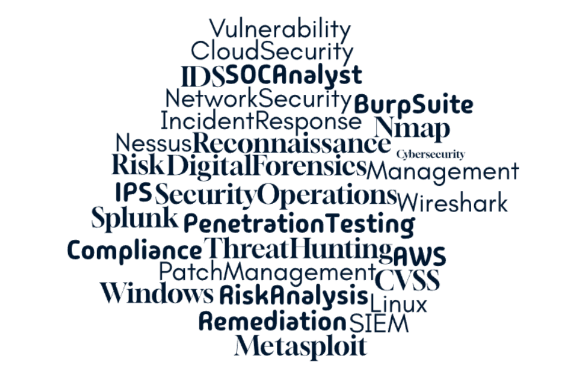

Professional Introduction
My name is David Sama Dobdinga. I am a cybersecurity graduate and Cybersecurity Analyst focused on vulnerability assessment, security monitoring, access control, system hardening, and risk-based remediation. I have hands-on experience using tools such as Tenable Nessus, Burp Suite, SonarQube, Splunk, Nmap, Wireshark, CyberChef, Windows Server, Active Directory, Group Policy, Linux command line, AWS, and Azure.
This portfolio highlights my academic background, cybersecurity projects, XP Cyber Range work, NCL Cyber Games participation, scouting reports, certifications, resume, technical skills, and career goals.
Academic Information
Class Rank: Graduate
College: Houston Community College
Organizations: The National Society of Leadership and Success
Cybersecurity Activities
- Completed XP Cyber Range projects covering system administration, access control, vulnerability remediation, malware handling, workstation troubleshooting, and GPO policy enforcement.
- Participated in NCL Spring 2026 Gymnasium, Practice Game, and Individual Game.
- Completed hands-on labs using Splunk, Nessus, Burp Suite, SonarQube, Nmap, Wireshark, and CyberChef.
- Practiced vulnerability assessment, log analysis, network traffic analysis, digital forensics, scanning, reconnaissance, and web application testing.
Employment History
Vulnerability Assessment Analyst – America CyberSquad (ACS) | 2023–Present
Scrum Master – Texas T and Tax | 2021–2023
Career Goal
My career goal is to become a Vulnerability Analyst and grow into a Security Engineer role, specializing in identifying, validating, prioritizing, and helping remediate vulnerabilities across enterprise, cloud, and hybrid environments.
Role Model
Role Model: Kevin Mitnick
“The human element is the weakest link in security.”
This quote inspires me because cybersecurity is not only about tools. It also requires awareness, communication, discipline, documentation, and strong security processes to reduce risk.
XP Cyber Range Projects
I completed multiple XP Cyber Range projects that allowed me to practice real cybersecurity tasks in system administration, access control, vulnerability remediation, malware handling, workstation troubleshooting, and security policy enforcement.
Projects Completed
-
Helpdesk Fun: User Login Nightmares: Diagnosed and resolved a domain user login issue so the user could successfully sign in to the workstation.
-
Interns & HR on the Domain Controller: Restricted unauthorized access to HR and Accounting shares, disabled an unnecessary account, and enforced least privilege access controls.
-
Security Begins & Never Ends with Updates: Remediated security issues by disabling guest admin privileges and updating vulnerable Joomla and FTP services.
-
Dangerous Drives: Performed removable media malware handling by removing infected files while maintaining file integrity.
-
Helpdesk Fun: User Workstation Nightmares: Fixed Windows workstation issues including mouse settings, desktop icons, internet connectivity, and HR network share mapping.
-
Secure Domain Accounts & Passwords: Created and enforced Group Policy Objects (GPOs) for password complexity, account lockout, password history, account lockout reset, and authentication controls.
XP Cyber Range Skills Demonstrated
- Diagnosed and resolved login, workstation, and network connectivity issues.
- Administered user access, domain rights, and account restrictions.
- Applied least privilege principles to restrict access to sensitive file shares.
- Updated vulnerable services to reduce exposure to known security risks.
- Removed infected files from removable media while maintaining file integrity.
- Created and enforced security baselines using Group Policy Objects.
- Configured account lockout settings, password complexity, password history, and password age requirements.
- Validated technical work using final project checks and documentation.
- Practiced system hardening, access control, troubleshooting, and remediation workflows.
XP Cyber Range Tools and Technologies Used
- Windows Server: Used for domain-based administration and security policy enforcement.
- Active Directory: Managed users, accounts, groups, and access control settings.
- Domain Controller: Applied centralized authentication and security policy controls.
- Group Policy / GPO: Enforced password policies, account lockout settings, and baseline security requirements.
- Security Groups: Restricted access to HR and Accounting resources using group-based permissions.
- Windows Workstation Tools: Troubleshot user profile issues, internet connectivity, desktop settings, and workstation behavior.
- Network Share Mapping: Restored access to shared resources and mapped required drives.
- Joomla Administration: Updated vulnerable web software to reduce security risk.
- FTP Service Management: Updated vulnerable FTP services to reduce exposure.
- Malware / Virus Scanning: Identified and removed infected files from removable media.
- File Integrity Validation: Ensured clean files remained intact after malware removal.
- Command Line Troubleshooting: Used command-line concepts to support system and network troubleshooting.
XP Cyber Range Project Evidence
NCL Spring 2026 Cyber Games
I participated in the National Cyber League (NCL) Spring 2026 competitions, including the Gymnasium training, Practice Game, and Individual Game. These challenges helped me strengthen hands-on cybersecurity skills across multiple domains in a timed environment.
NCL Games Completed
- NCL Spring 2026 Gymnasium Training
- NCL Spring 2026 Practice Game
- NCL Spring 2026 Individual Game
Cybersecurity Competencies Practiced
- Open Source Intelligence (OSINT): Researched publicly available information to answer investigation-based questions.
- Cryptography: Applied encoding, decoding, and cryptographic analysis concepts.
- Password Cracking: Practiced hash identification and password recovery methods.
- Log Analysis: Reviewed logs to identify suspicious activity and attacker behavior.
- Network Traffic Analysis: Analyzed packet and traffic patterns to identify security events.
- Digital Forensics: Examined digital evidence to support investigation and recovery tasks.
- Scanning and Reconnaissance: Identified systems, services, and potential vulnerabilities.
- Web Application Exploitation: Practiced identifying web application security weaknesses.
- Enumeration and Exploitation: Practiced identifying weaknesses and applying exploitation concepts.
- Wireless Security: Evaluated wireless security concepts and weaknesses.
NCL Tools and Techniques Applied
- CyberChef: Used for encoding, decoding, hashing, and cryptography support.
- Wireshark-style packet analysis: Used packet inspection concepts for network traffic investigation.
- Nmap-style reconnaissance: Practiced service identification, scanning, and enumeration concepts.
- Linux Command Line: Used file searching, decoding, investigation, and analysis workflows.
- OSINT Research: Used public sources and search techniques to gather relevant information.
- Log Analysis: Investigated event patterns and suspicious behavior.
- Password Hash Analysis: Practiced identifying hash types and applying cracking concepts.
- Digital Evidence Review: Practiced analyzing files, artifacts, and clues in forensic-style challenges.
Previous Cybersecurity Projects
In addition to XP Cyber Range and NCL, I completed hands-on cybersecurity projects that helped me build practical skills in vulnerability management, SIEM analysis, web application security, and secure code review.
Vulnerability Assessment Project
Used Tenable Nessus to scan systems, review vulnerabilities, evaluate CVSS severity, identify affected assets, and document remediation recommendations.
Splunk Threat Hunting Lab
Used Splunk to analyze Windows authentication events, investigate successful and failed logons, and identify suspicious login activity through event correlation.
Web Application Security Testing
Used Burp Suite to test web application behavior and identify OWASP Top 10 issues such as injection flaws, authentication weaknesses, and misconfigurations.
Static Application Security Testing
Used SonarQube to analyze vulnerable code, identify code-level security issues, and document secure coding recommendations.
Network Reconnaissance and Enumeration
Used Nmap to identify open ports, running services, and exposed attack surfaces during reconnaissance activities.
Scouting Report & Performance Analysis
My XP Cyber Range projects, NCL Cyber Games activities, and hands-on labs helped me evaluate my cybersecurity strengths, growth areas, and readiness for cybersecurity roles.
Strength Areas
- Access Control: Practiced restricting unauthorized access using Active Directory, security groups, and permissions.
- Security Policy Enforcement: Used Group Policy to enforce password and account security requirements.
- Vulnerability Remediation: Updated vulnerable services and reduced exposure to known risks.
- Log Analysis: Strengthened ability to review authentication and system logs for suspicious activity.
- Network Traffic Analysis: Improved ability to inspect traffic patterns and identify suspicious behavior.
- OSINT: Built stronger research skills using public information sources.
- Scanning and Reconnaissance: Practiced identifying systems, services, and exposed attack surfaces.
- Documentation: Improved ability to record findings, explain actions taken, and summarize lessons learned.
Developing Areas
- Password Cracking: Continuing to improve hash identification and cracking methodology.
- Digital Forensics: Continuing to build evidence analysis, file inspection, and recovery skills.
- Exploitation Techniques: Building deeper understanding of vulnerability exploitation and attack methods.
Key Lessons Learned
- Improved ability to analyze cybersecurity scenarios under time pressure.
- Strengthened investigative thinking and structured problem-solving.
- Gained confidence using multiple security tools across different cybersecurity domains.
- Learned to connect vulnerability identification with remediation, system hardening, and risk reduction.
- Improved documentation habits by reviewing challenge results and identifying lessons learned.
Overall, these experiences demonstrate my growth in cybersecurity fundamentals, vulnerability analysis, access control, troubleshooting, security operations, and continuous improvement.
Technical Tools I Became More Comfortable With
- Tenable Nessus: Vulnerability scanning, scan review, and remediation validation.
- Burp Suite: Web application testing and OWASP Top 10 vulnerability discovery.
- SonarQube: Static application security testing and code vulnerability review.
- Splunk: Log analysis, SIEM monitoring, event correlation, and authentication investigation.
- Nmap: Reconnaissance, service enumeration, and network scanning.
- Wireshark: Packet capture review and network traffic analysis.
- CyberChef: Encoding, decoding, hashing, and cryptography support.
- Windows Server: Domain and system administration practice.
- Active Directory: User account management, access control, and domain security.
- Group Policy: Password policy, account lockout, and security baseline enforcement.
- Linux Command Line: File analysis, investigation, and cybersecurity challenge workflows.
- Joomla: Web application update and vulnerable service remediation practice.
- FTP Services: Service update and security remediation practice.
- AWS and Azure: Cloud security awareness and hybrid environment exposure.
- VMware / VirtualBox: Virtual lab setup and cybersecurity practice environments.
Supporting Documents
- Download My Resume
- Certificates: CompTIA Security+, CompTIA CySA+, AWS Certified Solutions Architect – Associate, Certified ScrumMaster (CSM)
- XP Cyber Range project reports and NCL screenshots are included as evidence of hands-on cybersecurity practice.
Word Cloud
This word cloud represents key cybersecurity skills, tools, and concepts that are important to me.
